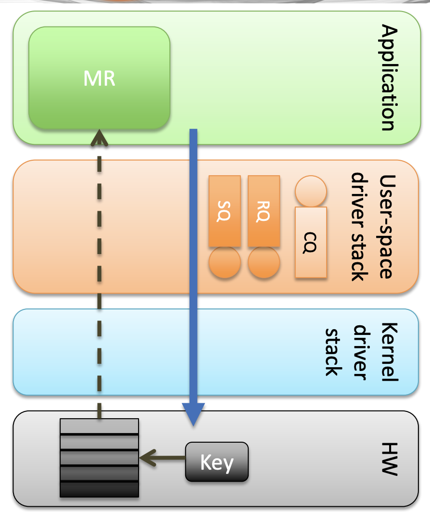
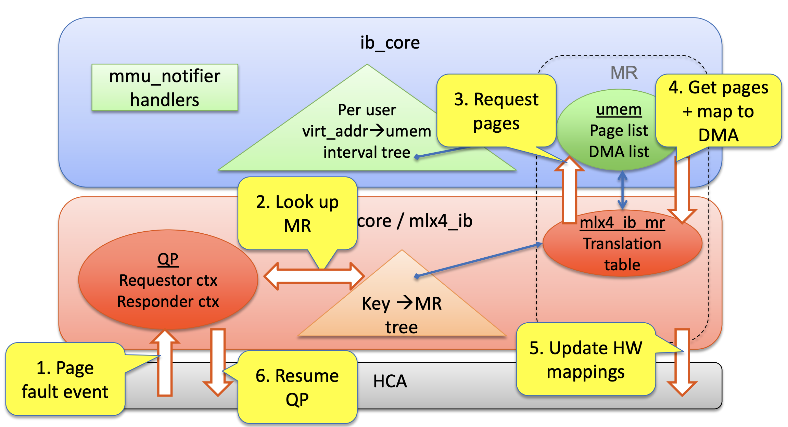

RDMA - ODP按需分页设计原理-优点-源码浅析
RDMA - ODP按需分页设计原理-优点-源码浅析
术语
ODP: 按需分页
HMM: 异构内存管理(Heterogeneous Memory Management)
显示/隐式ODP
-
显式 ODP在显式 ODP 中，应用程序仍注册内存缓冲区以进行通信，但此操作用于定义 IO 的访问控制，而不是固定页面。ODP 内存区域 (MR) 在注册时不需要具有有效的映射。(IBV_EXP_ACCESS_ON_DEMAND)
-
隐式 ODP在隐式 ODP 中，应用程序会获得一个特殊的内存密钥，该密钥代表其完整的地址空间。所有引用此密钥的 IO 访问（受与密钥关联的访问权限约束）都不需要注册任何虚拟地址范围。(IBV_EXP_IMPLICIT_MR_SIZE)
ODP预取 (IBV_EXP_PREFETCH_WRITE_ACCESS) , 驱动程序可以预取给定范围的页面并映射它们以供 HCA 访问。预取动词仅适用于 ODP MR，并且会尽最大努力完成，并且可能会忽略错误
- 无效虚拟页: 未映射的页面, 由于页面不再固定，OS 内核可以交换和迁移页面
简介
什么是按需分页？
应用程序使用系统调用(ibv_reg_mr)向 RDMA 适配器注册内存，然后将引用相应虚拟地址的 IO 操作直接发布到硬件。到目前为止，这是通过在注册调用期间固定内存来实现的。按需分页的目标是避免固定已注册内存区域 (MR) 的页面。这将使用户获得与交换其进程地址空间的任何其他部分时相同的灵活性。我们不必要求整个 MR 都适配物理内存大小，而是允许 MR 可以更大，并且只适合物理内存中的当前工作集。这可以使RDMA 进行编程变得更加简单。今天，处理的数据多于物理内存RAM 的开发人员需要在其进程的整个生命周期内取消注册和重新注册内存区域，或者保留单个内存区域并将数据复制到其中。按需分页将允许这些开发人员在其进程生命周期开始时注册单个 MR，并让操作系统管理在给定时间需要获取哪些页面。将来，我们可能能够为每个进程提供单个内存访问密钥，该密钥将整个进程的地址作为一个大内存区域提供，所以开发人员根本不需要注册内存区域
当前内存注册的痛点
注册内存的大小必须适配物理内存 • 应用程序必须具有内存锁定权限 • 由于以下操作存在, 持续同步地址空间和 HCA 之间的转换表很困难 – 地址空间更改（malloc、mmap、堆栈） – NUMA 迁移 – fork() • 注册是一项成本高昂的操作 – 没有引用局部性
尽管固定 MR 在 RDMA 应用中很普遍，但它有几个限制。它将大量页面固定在物理内存中（例如，数十或数百 GB），占用宝贵的 DRAM 资源。应用程序只能初始化不大于可用物理内存的 MR。同时，它失去了过度使用、页面迁移、透明大页面等机会。面对这些限制，提出了 ODP（按需分页MR)
ODP带来的好处
简化编程 – MPI 集合通信无需动态注册内存 – 无需管理专用缓冲池(MR pool) • 几乎无限的内存注册(如支持TB级别的MR) – 无需特殊权限 • 优化物理内存以保存工作集
内存注册流程

设计思路
• 仅限内核 – 对应用程序透明 • 通用代码 (ib_core) 任务 – 管理页面失效(page invalidations) • 注册 MMU 通知程序调用(MMU notifier calls) • 提供失效上下文 • 确定页面失效和 MR 之间的交集 – 支持缺页错误(page faults) • 在失效和缺页错误之间进行同步 • 将用户页面换入并映射到 dma
• 驱动程序代码 (mlx4_core/ib) 任务 – 处理页面错误 • 捕获并分类 HW 硬件页面错误 • 提供页面错误上下文 – 针对每个QP的请求者/响应者(Per-QP work_struct) – 处理 HW 页面失效
参考数据结构

页面换入参考流程

页面失效参考流程
ODP的RNIC页表与CPU页表
图 1, 我们展示了 ODP MR 的 RNIC 页表并将其与 CPU 页表进行比较。有效的虚拟页面映射到页表中的物理页面。无效的虚拟页面不会被映射。v5 在 CPU 页表中有效，但在 RNIC 页表中无效
同步 CPU 和 RNIC 页表的流程
ODP MR 与固定 MR 不同，因为它不会将页面固定在物理内存中，RNIC 页表将一些虚拟页面映射到物理页面（我们称之为有效虚拟页面），其余页面保持未映射状态，即无效虚拟页面。由于页面不再固定，OS 内核可以交换和迁移页面。应用程序能够公开大于物理内存的 MR。由于虚拟到物理的映射可能会发生变化，CPU 和 RNIC 页表通过上图所示的三个流程同步。
-
故障。当 RDMA 请求访问无效虚拟页面上的数据时，
(1a) RNIC 会停止 QP 并引发 RNIC 页面错误 1 中断。
(1b) 驱动程序通过 hmm_range_fault [2] 向 OS 内核请求虚拟到物理映射。OS 内核会在这些虚拟页面上触发 CPU 页面错误，并在必要时填充 CPU 页表。
(1c) 驱动程序更新 RNIC 页表上的映射
(1d) 恢复 QP。
-
失效。当 OS 内核尝试在交换或页面迁移等场景中取消虚拟页面映射时，
(2a) 它会通过 mmu_interval_notifier [2] 通知 RNIC 驱动程序使虚拟页面失效。
(2b) RNIC 驱动程序从 RNIC 页表中删除虚拟到物理的映射。
(2c) 驱动程序通知内核 RNIC 不再使用物理页面。然后，OS 内核修改 CPU 页表并重用物理页面。ODP MR 依靠故障和失效流来同步 CPU 和 RNIC 页表。RNIC 页表中的所有有效虚拟页面都保证在 CPU 页表中有效，但反之则不然。当内核将无效虚拟页面更改为有效虚拟页面时，它不会通知驱动程序。如图 1 所示，v5 在 CPU 页表中有效，但在 RNIC 页表中仍然无效。
-
建议流程解决了上述问题。应用程序可以主动请求 RNIC 驱动程序填充 RNIC 页表中的范围。RNIC 驱动程序通过步骤 (3a) – (3b) 完成建议，这些步骤与步骤 (1b) – (1c) 相同。
页面预取及好处
用于预取页面的新动词(verbs) • 用途 – 预热新内存映射 – MPI 约会协议优化 – UD 响应器优化
测试
• ODP 支持 – 为 IB 和 RoCE 实现了所有 RC 传输流 • 不包括 SRQ 和内存窗口 – IB 和 RoCE 上的 UD – 原始以太网 QP • 互操作性 – 同时运行的非 ODP 应用程序的延迟几乎不受影响 – 混合请求者/响应者也能很好地工作 • 内存驻留 ODP 页面的本机性能 • 页入性能 – 4K 页面错误大约需要 135us – 4M 页面错误大约需要 1ms
执行时间细分（请求发送者）
未来工作
• 超大 MR 支持 • 支持 TB 级的 MR • 隐式 ODP – 预先注册完整的应用程序地址空间 – 有效消除内存注册 • 元数据大小必须是当前映射内存的函数，而不是 MR 大小 – 适用于所有数据结构（IB 核心、驱动程序和硬件） • 内存窗口 (MW) 成为控制访问权限的主要工具
根据 IO 访问更新 PTE 访问/脏位 • 页面失效批处理 – swapper中的页面驱逐 – NUMA 迁移过程 • 将 ODP 扩展到客户物理机器翻译以实现虚拟化
总结
RDMA 性能很棒 – 但需要精心设计 • ODP 简化了 RDMA 编程和部署 – 将内存管理移至操作系统 – 解除内存固定限制 • ODP 不会牺牲性能或互操作性 • ODP 消除了内存注册
RDMA SoftRoCE(rxe) 支持ODP
该补丁系列在 SoftRoCE(rxe) 驱动程序上实现了按需分页功能，到目前为止，该功能仅在 mlx5 驱动程序中可用。作为一项重要更改，有必要将三重任务集（请求者、响应者和完成者）转换为工作队列，因为它们必须能够休眠才能在访问 MR 之前触发页面错误。对此进行了一些讨论，Bob Pearson 发布了用于转换的补丁集[2]。我发现它会导致软锁定，并于 11 月 18 日向他报告。但是，自那以后没有任何进展。自 RFC 补丁集首次发布以来，该问题一直阻碍着此 ODP 补丁集的进展，已超过三个月。由于他的补丁集由 13 个补丁组成，太大太复杂，无法找到软锁定的原因，因此我准备了一个补丁，可以实现转换而不会出现问题。我尽量减少更改，以便他可以轻松地对其进行他最初打算进行的更改。
[概述]
当应用程序注册内存区域 (MR) 时，RDMA 驱动程序通常会将页面固定在 MR 中，以便在 RDMA 通信期间物理地址永远不会改变。这需要 MR 适配物理内存，不可避免地会导致内存压力。另一方面，按需分页 (ODP) 允许应用程序注册 MR 而不固定页面。当驱动程序需要时，它们会被调入页面，当操作系统回收时，它们会被调出页面。因此，可以注册一个不用适配物理内存的大型 MR，而不会占用太多物理内存。
[为什么要添加此功能？]
我们富士通为 RDMA 做出了贡献，希望将其与持久内存一起使用。持久内存可以托管文件系统，允许应用程序直接读取/写入文件，而无需涉及页面缓存。这称为 FS-DAX（文件系统直接访问）模式。存在一个问题，即启用 DAX 的文件系统上的数据无法使用软件 RAID 或其他硬件方法复制。使用具有高速连接的 RDMA 进行数据复制是解决该问题的最佳方法。但是，已知有一个问题阻碍了 RDMA 与 FS-DAX 的结合使用。当在同一节点上同时处理对文件的 RDMA 操作和文件元数据的更新时，可以执行非法内存访问，而忽略更新的元数据。这是因为 RDMA 操作不经过页面缓存，而是直接访问数据。曾经有人努力[3]解决这个问题，但最终被否决了。虽然没有通用的解决方案，但可以使用 ODP 功能解决这个问题。它使内核驱动程序能够在处理 RDMA 操作之前更新元数据。我们增强了 rxe 以加快持久内存的使用。我们对 rxe 的贡献包括 RDMA Atomic write[4] 和 RDMA Flush[5]。随着它们与 ODP 合并，开发人员将有一个环境来创建和测试带有 FS-DAX 的 RDMA 软件。为此目的，正在开发一个库（librpma）[6]。任何人都可以使用此环境，无需任何特殊硬件，只需一台具有普通 NIC 的普通计算机即可，尽管在性能方面不如硬件实现。
[设计考虑]
ODP 仅在 mlx5 中可用，但 ib_uverbs（infiniband/core）中提供了可以常用的函数和数据结构。接口严重依赖于 HMM 基础架构[7]，此补丁集尽可能多地使用它们。虽然 mlx5 同时具有显式和隐式 ODP 功能以及预取功能，但此补丁集仅实现了显式 ODP 功能。当响应者和完成者处于睡眠状态时，由于接收队列溢出而发生数据包丢失的可能性更大。涉及多个队列，但由于 SoftRoCE 使用 UDP，因此最重要的是 UDP 缓冲区。大小可以在 net.core.rmem_default 和 net.core.rmem_max sysconfig 参数中配置。用户应该在数据包丢失的情况下更改这些值，但页面错误通常不会持续太久而导致问题。
[ODP 如何工作？]
“struct ib_umem_odp” 用于管理页面。它是在每个启用 ODP 的 MR 注册时为其创建的。此结构包含一对数组 (dma_list/pfn_list)，用作驱动程序页表。DMA 地址和 PFN 存储在驱动程序页表中。它们在页面输入和页面输出时更新，两者都使用 ib_uverbs 层中的通用接口。当请求者、响应者或完成者访问 MR 以处理 RDMA 操作时，可能会发生页面输入。如果他们发现正在访问的页面不在物理内存中，或者页面上未设置必要的权限，他们会引发页面错误，使页面具有适当的权限，同时更新驱动程序页表。确认页面存在后，它们执行内存访问，例如读取、写入或原子操作。页面输出由页面回收或文件系统事件触发（例如，正在用作 MR 的文件的元数据更新)。创建启用 ODP 的 MR 时，驱动程序会注册一个 MMU 通知器回调。当内核发出页面失效通知时，会触发回调以取消映射 DMA 地址并更新驱动程序页表。之后，内核释放页面。
[支持的操作]
RC 连接上支持所有传统操作。新的 Atomic write[4] 和 RDMA Flush[5] 操作不包含在此补丁集中。我将在合并此补丁集后发布它们。在 UD 连接上，支持 Send、Recv 和 SRQ-Recv。
[如何测试 ODP？]
只有少数资源可用于测试。推荐使用 rdma-core 中的 pyverbs 测试用例和 perftest[8]。除此之外，ibv_rc_pingpong 命令也可以用于测试。请注意，您可能必须从上游构建 perftest，因为旧版本不能正确处理 ODP 功能。该树可从以下 URL 获得：https://github.com/daimatsuda/linux/tree/odp_v3 [未来工作] 我的下一步工作是使用 ODP 启用新的 Atomic write[4] 和 RDMA Flush[5] 操作。之后，我将实现预取功能。它允许应用程序使用 ibv_advise_mr(3) 触发页面错误以优化性能。一些现有软件（如 librpma[6]）使用此功能。此外，我认为我们将来还可以添加隐式 ODP 功能
MLX5支持ODP
以下补丁集在 RDMA 堆栈和 mlx5_ib Infiniband 驱动程序中实现了按需分页 (ODP) 支持。
页面错误通常如何工作？
使用固定内存区域，驱动程序会将虚拟地址映射到总线地址，并将这些地址传递给 HCA 以将它们与新 MR 关联。使用 ODP，驱动程序现在可以将 MR 中的某些页面标记为不存在。当 HCA 尝试执行通信操作的内存访问时，它会注意到页面不存在，并向驱动程序发出页面错误事件。此外，HCA 执行传输协议所需的任何操作以暂停通信，直到页面错误得到解决。在收到页面错误中断后，驱动程序首先需要知道页面错误发生在哪个虚拟地址上，以及在哪个内存密钥上。处理发送/接收操作时，此信息位于工作队列内。驱动程序读取所需的工作队列元素，并解析它们以收集地址和内存密钥。对于其他 RDMA 操作，HCA 生成的事件仅包含虚拟地址和 rkey，因为不涉及工作队列元素。有了 rkey，驱动程序可以在其数据结构中找到相关的内存区域，并计算完成操作所需的实际页面。然后，它使用 get_user_pages 将所需的页面检索回内存，获取 dma 映射，并将地址传递给 HCA。最后，驱动程序通知 HCA 它可以继续对遇到页面错误的队列对进行操作。get_user_pages 返回的页面通过释放其引用立即取消固定。
如何处理失效？
补丁添加了基础架构以将 RDMA 堆栈订阅为 mmu 通知程序客户端 [1]。每个使用 ODP 的进程都会注册一个通知程序客户端。收到页面失效通知时，会将它们传递给 mlx5_ib 驱动程序，该驱动程序会使用新的、不存在的映射更新 HCA。只有在刷新 HCA 的页表缓存后，通知程序才会返回，从而允许内核释放页面。
支持哪些操作？
目前，RC 协议仅支持发送、接收和 RDMA 写入操作，UD 协议也支持发送操作。我们希望将来能够实现对其他传输和操作的支持。
补丁集的结构
首先，补丁适用于 roland/infiniband.git 树中的 for-next 分支，应用了签名补丁 [2]，还应用了重构 umem 以使用线性 SG 表 [3] 的补丁。
补丁 1-5：第一组补丁为 IB 核心层添加了页面错误支持，允许注册 MR 而无需固定其页面。第一个补丁添加了功能位、配置选项以及用于从用户空间查询分页功能的方法。接下来的两个补丁 (2-3) 对 ib_umem 类型进行了一些必要的更改。补丁 4 和 5 分别添加了分页支持和无效支持。
补丁 6-9：下一组补丁包含对 mlx5 驱动程序的一些小修复。补丁 6-7 修复了两个可能影响分页代码的错误，补丁 8-9 添加代码以将缺失信息存储在 mlx5 结构中，这是分页代码正常工作所必需的。
补丁 10-16：这组补丁为 mlx5 驱动程序添加了小规模的新功能并构建了分页支持。补丁 10-11 对 UMR 机制（mlx5 用于更新设备页面映射的内部机制）进行了更改。补丁 12 为 mlx5_core 模块添加了页面错误处理的基础结构支持。补丁 13 为设备配置分页功能，补丁 15 添加了执行部分设备页表更新的函数。最后，补丁 16 添加了辅助函数，用于从驱动程序上下文中的用户空间工作队列读取信息。
补丁 17-20：此补丁集的第四部分终于为 mlx5 驱动程序添加了分页支持。补丁 17 在 mlx5_ib 中添加了基础结构，以处理来自 mlx5_core 的页面错误。补丁 18 添加了处理 UD 发送页面错误和 RC 发送和接收页面错误的代码。补丁 19 添加了对由 RDMA 写入操作引起的页面错误的支持，补丁 20 为 mlx5 驱动程序添加了无效支持，允许动态取消页面映射
ODP代码分析
IBV_ACCESS_ON_DEMAND ODP标记位
rdma-core
|
|
linux-kernel(参考mlx5)
|
|
总结
- ODP需要软硬件做整体设计, 处理好缺页异常/失效/状态恢复等逻辑
- MLX5采用mkey结合红黑树做缓存, EQ事件队列用于异步处理缺页等逻辑
- 依赖Linux内核异构内存管理API支持(HMM)
参考
在SoftRoCE上支持ODP: https://lwn.net/Articles/918463/
MLX5支持ODP: https://www.spinics.net/lists/linux-rdma/msg18906.html#google_vignette
MLX5支持隐式ODP提交记录: https://github.com/ssbandjl/linux/commit/81713d3788d2e6bc005f15ee1c59d0eb06050a6b
Nvidia RDMA优化内存访问: https://docs.nvidia.com/networking/display/mlnxofedv492240/optimized+memory+access
ODP SSD相关论文(TeRM：使用 SSD 扩展 RDMA 连接内存): https://www.usenix.org/system/files/fast24-yang-zhe.pdf
OFA ODP(用户级网络的按需分页): https://openfabrics.org/images/eventpresos/workshops2013/2013_Workshop_Tues_0930_liss_odp.pdf
rdma-core ODP提交记录, ibv_query_device_ex 报告按需分页功能的功能。 该补丁还添加了 IBV_ACCESS_ON_DEMAND 访问标志，以允许注册启用按需分页的内存区域: https://patchwork.kernel.org/project/linux-rdma/patch/1441292199-8371-3-git-send-email-haggaie@mellanox.com/
Linux内核-HMM异构内存管理: https://docs.kernel.org/translations/zh_CN/mm/hmm.html
晓兵(ssbandjl)
博客: https://cloud.tencent.com/developer/user/5060293/articles | https://logread.cn | https://blog.csdn.net/ssbandjl | https://www.zhihu.com/people/ssbandjl/posts | https://chattoyou.cn
DPU专栏
https://cloud.tencent.com/developer/column/101987
技术会友: 欢迎对DPU/智能网卡/卸载/网络,存储加速/安全隔离等技术感兴趣的朋友加入DPU技术交流群
weixin: ssbandjl
公众号: 云原生云

- 原文作者：晓兵
- 原文链接：https://logread.cn/post/rdma/rdma_odp/
- 版权声明：本作品采用知识共享署名-非商业性使用-禁止演绎 4.0 国际许可协议进行许可，非商业转载请注明出处（作者，原文链接），商业转载请联系作者获得授权。